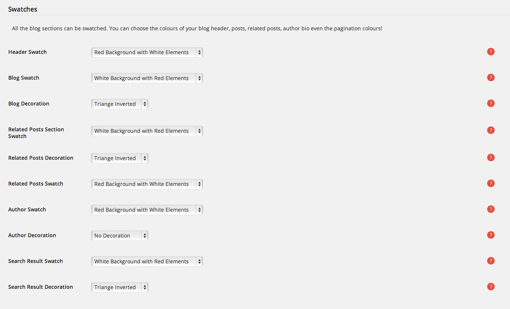

Posts
Creating posts
The Posts menu option on the left is where you add blog posts. To add a new blog post, select the Posts > Add New option from the left hand WordPress menu.
Post types
When editing a blog post, below the Update button you can see the Format box. Pick one that suits the type of post you would like to present

- Standard: Used for text only (you may add featured image as well).
- Image: Used for posts with a featured image.
- Gallery: Used for posts with a gallery included. If you wish to add a gallery to your post, follow these steps
- press the Add Media button above the editor
- click on the Create Gallery option on the left-side menu
- pick the images that you wish to add to the gallery by clicking on them
- click on the Create a new gallery button
- a tag with the ids of the images that you selected should now be inserted in the text
- Video: Used for posts with a video. If you wish to add a video to your post, add the embed tag with the video URL as content. For example,
[embed]http://www.myurlvideo.com[/embed].
- Link: Used for posts that link to an external URL. Add the link tag with the link URL as content. For example,
[link]http://www.mylink.com[/link].
- Audio: Used for posts with audio. If you wish to add audio to your post, add the audio tag with the source URL of the audio as content. For example,
[audio src="http://www.myurlaudio.com"]
- Quote: Used for posting a quote. The name of the post will be the quote author. There is no single-post page for this post type.
Take a look at the video on how to use custom posts : post and post types video
Blog settings
Angle has loads of options about the set up of your blog pages. These options can be found in Angle>Blog.
To customize the blog pages headers the options are
- Show Header: Show or hide the header in all blog pages.
- Header Height: The height of header normal, short, tiny and no padding. Important Notice - When using height tiny or no padding, avoid using any Blog Decoration, because that might cause the decoration to overlap with the header's content.
- Title: The main title of the header in the blog pages
- Subtitle: The subtitle of the header in the blog pages
- Title Font Size: Choose size of the font for the title of the header
- Title Font Weight: Choose the font weight of the font for the title of the header.
- Title Alignment: The text alignment of the header
- Title Underline: Select if you want an underline in the header
- Background Image: Choose an image to use as background for the header
- Background Video: Choose a video to use as background for the header (url is needed)
- Overlay Colour: Select a color for a layer overlaying the background image or video
- Overlay Opacity: Select the opacity of the overlaying layer
- Overlay Grid: Adds an overlay grid image in the overlay layer.
- Image Background Size: Select the size for the background image
- Image Background Repeat: Select how you want the background image to repeat
- Image Background Parallax: Select if fou want the background image to scroll or stay fixed
To set up general blog options these are the options
- Blog Layout: Layout of your blog page. Choose right sidebar, left sidebar, fullwidth layout
- Post Icon: Toggle the appearance of post type icons in posts
- Show Comments On: Where to allow comments. All (show all), Pages (only on pages), Posts (only on posts), Off (all comments are off)
- Show Read More: Show or hide the "read more" link in list view
- Blog read more link: The text that will be used for your read more links
- Strip teaser: Strip the content before the <–more–> tag in single post view
- Pagination Style: Select the pagination type
Settings for the single post page are
- Display categories: Toggle the appearance of the categories in the single post page
- Display tags: Toggle the appearance of the post tags
- Display comment count: Show the number of comments
- Show related posts: Show Related Posts in a slider after the post content
- Number of related posts: The total number of related posts
- Related posts per slide: The number of related post per slide
- Display avatar: Toggle avatars on/off in Author Bio Section
- Open Featured Image in Magnific Popup : Featured image in single post view will open in a large preview popup
Finally you can select the colour swatches and the decorations for each part of your blog pages.

All the blog sections can be swatched. You can choose the colours of your blog header, posts, related posts and author bio.
- Header Swatch: select the colour scheme to use for the header on this page.
- Blog Swatch: choose a color swatch for the Blog page.
- Blog Decoration: choose a style to use as the blog decoration.
- Related Posts Section Swatch: choose a color swatch for the related posts section below post content.
- Related Posts Decoration: choose a style to use as the Related Posts decoration.
- Related Posts Swatch: choose a color swatch for all the related posts below post content.
- Author Swatch: choose a color swatch for the author bio section.
- Author Decoration: choose a style to use as the Author's Page decoration.
- Search Result Swatch: choose a color swatch for the search result section.
- Search Result Decoration: choose a style to use as the search result page decoration.
You can read more about the colour swatches here
Post sharing
Angle gives you the option to add social sharing buttons to your posts.
You can turn on or off these buttons in Angle>Social.
Pages
Creating new page
The Pages menu option on the left is where you add pages. To add a new page, select the Pages > Add New option from the left hand WordPress menu.
After typing your page's title you can select the page template and start adding your content (see following paragraphs).
Angle comes bundled with Visual composer. Visual Composer is the most famous drag and drop page builder. You can take full control over your WordPress site, build any layout you can imagine without any programming knowledge required.
Adding Sections
One of the most advanced features of Angle theme is the use of multiple page sections. Think of a section as a partial in your page that you can add any type of content:
Each section can host its own content, a different decoration to separate them from other sections and even a different color swatch.
To use page sections with different colours and decorations, make sure that you have selected the default page template (full screen).
Before adding content to a new page, make sure you have created a new row.
Turn the Visual composer on by clicking on the button:
Then you can start adding content inside that row(section). Do that by pressing the blue button Visual Composer, that is located above the editor. Then press the Add row button.
You have created an empty section. Before adding new elements to that section, try to edit it by clicking on the small pencil icon that is located on the upper right corner of the newly created row.
A list of options should now appear
- Title: Set the name of the section's title.
- Subtitle: Smaller subtitle to be shown under the main title text.
- Title Font Size: Choose the size of the font to use in your header.
- Title Font Weight: Choose the weight of the font to use in the title.
- Title Alignment: Align the header left, right or center.
- Title Underline: Adds an underline effect below the title & subtitle.
- Swatch: Choose a color swatch for the section. On how to set color swatches, take a look at the Color swatches section.
- Top Decoration: Choose a style to use as the top decoration. It is highly recommended that you use the top decoration option only, for every section that you create, in order to avoid overlapping decorations. In case you use media backgrounds(image or video), avoid using decorations completely in the current section. Should you want to add decorations to it anyway, do it by adding bottom decoration to the section before it and top decoration to the section after it.
- Bottom Decoration: Choose a style to use as the bottom decoration.
- Section Height: The height of header normal, short, tiny and no padding. Important Notice - When using height tiny or no padding, avoid using any Top Decoration on the following section, or any Bottom Decoration on the previous section, because that might cause the decorations to overlap with the section's content.
- Section Width: Choose between padded or full width section. If you want to have the content of the section extending to the edge of the screen use the full width section.
- Background Image: Click on the plus sign in the middle of the frame. Add an image from the Media Library or upload a new one. This image will appear as the background view of your section. Once added, you can see the preview icon in the options of the section. If you want to remove it, click on the x icon on the top right side of the image. You can only add one image background per section.
- Background Video: Enter the URL of the source of the video you want to use as background.
- Overlay Color: Set the color of a layer that overlays the video & image background.
- Overlay Opacity: Set the opacity of the overlay layer.
- Overlay Grid: Adds an overlay grid image in the overlay layer.
- Image Background Size: Set how the image will fit into the section.
- Image Background Repeat: Set how the image will be repeated.
- Image Background Parallax: Set the way the background scrolls with the page.
- Scroll - Normal
- Fixed - Applies the parallax effect on the background image
In sections with media backgrounds(image or video), avoid using decorations completely. Should you want to add decorations to it anyway, do it by adding bottom decoration to the section before it and top decoration to the section after it.
Take a look at the video on how to create page sections: adding page sections
Section decorations
What makes Angle unique as a theme and really amazing to interact with are the section decorations. The section decorations are small touches of design artwork, that make your pages stand out and catch the eye of the reader. Decorations are added to the top,bottom or both parts of each section. You can choose from 14 different kinds of decorations. All of them are created with svgs, which offer a much better quality than simple images, while supporting retina display devices. In addition, cross-browser compatibility is guarranteed. Svgs are also supported by IE8 and later.

Adding a decoration to a section is an easy task. When editing a section,
underneath the Swatch option you can see the Top Decoration and Bottom Decoration options, as shown in the image below.
When you want to add a decoration between two sections with a different swatch,
it is advisable to pick one of the left-slope,right-slope,arrow,circle,clouds,curtain,rounded,rounded-inverted,triangle,triangle-inverted,zig-zag or zipper decorations. On the other hand, when your sections have the same swatch, you would get a better effect if you chose one of the lines or cross decorations.
It is strongly recommended that you make sure no bottom decoration overlaps with any top decoration of the next section. In case you use media backgrounds(image or video), avoid using decorations completely in the current section. Should you want to add decorations to it anyway, do it by adding bottom decoration to the section before it and top decoration to the section after it.
Take a look at the video on how to set the section decorations: section decorations video
Page templates
When editing a page, below the Update button you can see the Page Attributes box. From there you can pick the template that you want your page to be styled with. Choose Right Sidebar or Left Sidebar, if you have defined any widgets for the sidebar. If not, it is recommended to use the Default Template.
Take a look at the video on how to use the page templates : page templates video
If you want to use sections in your pages make sure that you select the Default template
Angle gives you the option to set your headers on a per page basis. Each page can have different header settings including colours, font sizes etc. :
- Show header: Option to show or hide the page header
- Header Height: The height of header normal, short, tiny and no padding. Important Notice - When using height tiny or no padding, avoid using top decoration on the following section, because that might cause the decoration to overlap with the header's content.
- Header Swatch: Choose a color swatch for the header.
- Title: Set the name of the headers's title.
- Subtitle: Smaller subtitle to be shown under the main title text.
- Title Font Size: Choose the size of the font to use in your header.
- Title Font Weight: Choose the weight of the font to use in the title.
- Title Alignment: Align the header left, right or center.
- Title Underline: Adds an underline effect below the title & subtitle.
- Background Image: Click on the plus sign in the middle of the frame. Add an image from the Media Library or upload a new one. This image will appear as the background view of your section. Once added, you can see the preview icon in the options of the section. If you want to remove it, click on the x icon on the top right side of the image. You can only add one image background per section.
- Background Video: Enter the URL of the source of the video you want to use as background.
- Overlay Color: Set the color of a layer that overlays the video & image background.
- Overlay Opacity: Set the opacity of the overlay layer.
- Overlay Grid: Adds an overlay grid image in the overlay layer.
- Image Background Size: Set how the image will fit into the section.
- Image Background Repeat: Set how the image will be repeated.
- Image Background Parallax: Set the way the background scrolls with the page.
- Scroll - Normal
- Fixed - Applies the parallax like effect on the background image
Take a look at the video on how to set up the page header : page headers
In this video you can see how to set the header's height : headers heights
Page Overrides
For more flexibility Angle gives you a set of options to override some general settings:
- Show Top Navigation: Show or hide the site's top navigation (ideal for landing pages or specific pages like maintenance mode page).
- Override Top Navigation Swatch: Override the default site top nav swatch (only for this page). Use this options to set up the page decoration on pages using the left or right sidebar template.
- Override Footer Swatch: Override the default site footer swatch (only for this page).
Portfolios
Adding portfolio items
The Portfolio Items menu option on the left is where you add portfolio items. To add a new portfolio item, select the Portfolio Items > Add New option from the left hand WordPress menu. The format of each portfolio item that you wish to create, follows the same rules as the post types. Take a look at the next section for more info.
When you create a new portfolio item, you need to setup a few more options.
- Excerpt: The summary of your portfolio item's content that will be shown when you add it as content to your pages.
- Link Type: Your portfolio item can link to a
- Default Link: the single portfolio page of the theme.
- Page: a page that you have created.
- Post: a post that you have posted.
- Portfolio: another portfolio item that you have created.
- Category: a category of posts.
- URL: an external URL.
- Portfolio Swatch: Choose a color scheme for the portfolio item. On how to set color swatches, take a look at the Color swatches section.
- Portfolio Template: Choose the template that you wish your single-portfolio page to be styled with
- Big Image: Will add a full width header to the top of the page, which will contain the featured image, Header Title & Description, with the skill list on the right side.
- Smaller Image: Will create a header with a smaller image, Header Title, Description and link on the right side of the image.
- Fullwidth Page Template: Allows you to create your own page using sections, just like a regular full width page.
- Top Navigation: If On, navigation through the portfolio items is possible from the single-portfolio page.
- Small template side text: Text will appear in single portfolio small template on the right side of the page.
- External url: Link will appear in the single portfolio item underneath the skills list.
- Categories The portfolio items can be grouped into categories.
- Features: The items of the Features list that will appear on the right side of the template.
- Feature image feature image of the portfolio item
Take a look at the video on how to create portfolio items : portfolio items video
Portfolio item types
Angle supports the following three portfolio item types:
- Standard: Used for text only (you should add featured image as well. All portfolio items should have a feature image).
- Gallery: Used for portfolio items with a gallery included. If you wish to add a gallery to your post, follow these steps
- press the Add Media button above the editor
- click on the Create Gallery option on the left-side menu
- pick the images that you wish to add to the gallery by clicking on them
- click on the Create a new gallery button
- a tag with the ids of the images that you selected should now be inserted in the text
- Video: Used for posts with a video. If you wish to add a video to your post, add the embed tag with the video URL as content. For example,
[embed]http://www.myurlvideo.com[/embed]. Youtube and vimeo video types are supported
The following videos will show you how to create different portfolio type items
- Standard portfolio item video
- Gallery portfolio item video
- Video portfolio item video
Single Portfolio item templates
Angle includes three different templates to use for your portfolio item single page:
- Big Image - Will add a full width header to the top of the page which will contain the featured image, Header Title & Description with the skill list on the right side.
- Smaller Image - Will create a header with a smaller image and Header Title, Description and link on the right side of the image.
- Full Width Page - Allows you to create your own page using sections, just like a regular full width page.
Take a look at the video on how to use the portfolio single item templates: portfolio templates video
Adding portfolios to a page
If you wish to add a portfolio section to your page, once you have created an empty row, follow these steps
- press the Add element button of the Visual Composer and choose the Portfolio element. Now you can edit the portfolio
- Category: the categories of the portfolios that you wish to be shown(to pick more than one, hold down the ctrl button while clicking on the categories).
- Number of portfolio items to display (per page if pagination is on ): set the number of portfolio items to display(per page).
- Portfolio Columns: set the number of columns to show the portfolio in.
- Use pagination: set option to Simple or Infinite if you want to split your portfolio items in pages.
- Shape: choose the portfolio image shape.
- Shadow: show or hide shadows.
- Show Title: display the portfolio title.
- Show Excerpt: display the portfolio excerpt.
- Overlay: show overlay on hover.
- Portfolio Filters: show filter navigation.
Take a look at the video on how to add a portfolio to a page : adding portfolios to a page
General portfolio settings
The general settings for the portfolios can be found in Angle>Portfolio
- Show related items: Toggle the display of the related items section in the single portfolio pages.
- Related items title: Related items title that is shown on single portfolio page above releated items.
- Related items Swatch: Swatch color for the related items in single portfolio page.
- Related items Section Decoration: Decoration style for the related items section.
- Related items Shape: Shape for images for the related items in single portfolio page.
- Related items Shadow: Toggle the visibility of flat shadows for the related items.
- Image Width: Width of each portfolio item image (default 800px).
- Image Height: Height of each portfolio item image (default 600px).
- Image Cropping: Option to crop images to the exact proportions.
Services
Adding Services
The Services menu option on the left is where you add services. To add a new service, select the Services > Add New option from the left hand WordPress menu. When you create a new service, you need to setup a few more options.
- Title and main content the main service title and content as it will appear in the single service page.
- Excerpt: the summary of your service's content that will be shown in the services list when you add it as content to your pages.
- Show Header: show or hide the header.
- Page Swatch: select the colour scheme to use for this single-service page and sidebar. On how to set color swatches, take a look at the Color swatches section.
- Page Decoration: choose a decoration to use at the top of the single service page.
- Image Type: services can show
- Featured Image: shows an uploaded image from the media library.
- Icon: shows an icon.
- Featured Image & Icon: shows both.
- Nothing: no image or icon shown.
- Icon: if you select Icon or Featured Image & Icon Image Type, this is the icon that will be used.
- Icon Animation: if you select Icon or Featured Image & Icon Image Type, this is the animation that will be used when you hover over it.
- Service Page Template: select a page template to use for this service.
- Categories: Services can be grouped into categories.
- Feature image: feature image of the service.
Take a look at the video on how to create a new service : creating a new service video
Adding services to a page
If you wish to add a services section to your page, once you have created an empty row, follow these steps
- press the Add element button of the Visual Composer and choose the Services element. Now you can edit the services
- Choose a category: the category of the services that you wish to be shown.
- Services Count: the number of services to show.
- Service Style: services will be shown horizontallly or vertically on the page.
- Columns (horizontal style): number of columns to show the services in.
- Image Shape: the shape of the service's image.
- Shape Size: the size of the service's shape.
- Shadow: show or hide shadows.
- Show Connections: services will be connected with a dotted line.
- Show Titles: show or hide the services' titles.
- Link Title: linkable titles.
- Show Image: show or hide the images.
- Link Image: linkable images.
- Show Excerpt: show or hide the excerpts.
- Excerpt & More Text Alignment: sets the text alignment of the excerpt text and the read more link.
- Show Readmore Link: show or hide the readmore link.
- Readmore Link Text: customize your readmore link.
Take a look at the video on how to add a list of services to a page : adding a service to a page video
Staff members
Adding Staff members
The Staff menu option on the left is where you add staff members. To add a new staff member, select the Staff > Add New option from the left hand WordPress menu. When you create a new staff member, you need to setup a few more options.
- Title and main content: the main service title and content.
- Excerpt: the summary of your staff member's content that will be shown when you add it as content to your pages.
- Link Type: same as Portfolio Items.
- Staff Detail Section Swatch: select the color scheme to use for the top section in the detail page. On how to set color swatches, take a look at the Color swatches section.
- Job Title: sub header that is shown below the staff members name.
- Personal Moto Title: the cheeky title that pops up when a staff member image is hovered over.
- Personal Moto Text: the cheeky text that pops up when a staff member image is hovered over.
- Social Icon 1: social Network Icon to show for this Staff Member.
- same for the rest of the social icons.
- Departments: staff members can be grouped in departments.
- Feature image: feature image of the staff member.
Take a look at the video on how to add a staff member : adding a staff members video
Adding staff members to a page
If you wish to add a staff section to your page, once you have created an empty row, follow these steps
- press the Add element button of the Visual Composer and choose the Staff List element. Now you can edit the staff list
- Choose a department: populate your list from a department.
- Number of members: number of members to display.
- List Columns: number of columns to show staff in.
- Image Shape: the shape of the member's image.
- Shape Size: the size of the member's shape.
- Shadow: show or hide shadows.
- Link in name: make the name link to the url specified in staff page.
- Show Position: display the staff position below the name.
- Show Excerpt: show or hide the excerpt.
- Excerpt & More Text Alignment: sets the text alignment of the excerpt text and the read more link.
- Show Social Links: show or hide the social links.
- Open Social Links In: where the social links open to.
Take a look at the video on how to add a list of staff members to a page : adding staff members to a page video
Adding featured staff member to a page
If you wish to add a staff section to your page, once you have created an empty row, follow these steps
- press the Add element button of the Visual Composer and choose the Featured Staff member element. Now you can edit the Featured Staff member
- Featured member: select the staff member that will be featured.
- Image Shape: the shape of the member's image.
- Shape Size: the size of the member's shape.
- Shadow: show or hide shadows.
- Show Position: display the staff position below the name.
- Show Content: show or hide content.
- Content Font Size: big or small font size.
- Content Alignment: sets the text alignment of the excerpt text and the read more link.
- Show Social Links: show or hide the social links.
- Open Social Links In: where the social links open to.
Take a look at the video on how to add a featured staff member to a page : adding featured staff member to a page video
Slideshows
Creating a slideshow
The Slider Images menu option on the left is where you create a Slideshow. To add a new Slideshow, select the Slider Images > Slideshow option from the left hand WordPress menu. When you create a new Slideshow, you need to specify the Name, Slug, Parent and Description of the slideshow. Then, you can add Slider Images to it.
Adding slideshow items
The Slider Images menu option on the left is where you add Slider Images. To add a new Slider Image, select the Slider Images > Add New option from the left hand WordPress menu. When you create a new Slider Image, you need to setup two more options.
- Link Type: same as Portfolio Items.
- Slideshow Image: set the featured image to be used as a slider image.
Take a look at the video on how to create a slideshow : creating a slideshow video
Adding Slideshows to a page
If you wish to add a slideshow to your page, once you have created an empty row, follow these steps
- press the Add element button of the Visual Composer and choose the Slideshow element. Now you can edit the Slideshow
- Choose a Flexslider: populate your slider with one of the slideshows you have created.
- Animation style: select how your slider animates.
- Speed: set the speed of the slideshow cycling, in milliseconds.
- Duration: set the speed of animations.
- Auto start: start slideshow automatically.
- Show navigation arrows: show or hide the navigation arrows.
- Navigation arrows type: simple or fancy navigation arrows.
- Item width: set the width of the slider items( leave blank for full ).
- Show controls: show or hide the controls.
- Choose the place of the controls: Inside or Outside the slider images.
- Choose the alignment of the controls: sets the alignment of the controls.
- Show Captions: show or hide the captions.
- Captions Vertical Position: sets the vertical position of the captions.
- Captions Horizontal Position sets the horizontal position of the captions.
- Show Tooltip: show or hide the tooltip.
Take a look at the video on how to add a slideshow to a page: adding a slideshow to a page
Revolution Slider
Angle uses Revolution Slider, it is also included in the theme.
Take a look at the video on how to add a revolution slider to a page: adding a revolution slider to a page
Testimonials
Adding testimonials
The Testimonials menu option on the left is where you add testimonials. To add a new testimonial, select the Testimonials > Add New option from the left hand WordPress menu. When you create a new testimonial, you need to setup one more option.
- Citation: reference to the source of the quote.
- Feature image: (optional) feature image for the testimonial.
Take a look at the video on how to create a testimonial : creating testimonials video
Adding testimonials to a page
If you wish to add testimonials to your page, once you have created an empty row, follow these steps
- press the Add element button of the Visual Composer and choose the Testimonials element. Now you can edit the Testimonials
- Choose a group: group of testimonials to show.
- Number Of Testimonials: number of Testimonials to display.
- Show avatars: display the featured image as avatar.
- Display as Slideshow: display the testimonials as a slideshow.
Take a look at the video on how to add testimonials to a page: adding testimonials to a page
Contact page
A contact page in Angle requires the Contact Form 7 plugin to be activated, in order to be able to create a contact form. Make sure you have downloaded and installed the correct plugin from here.
The Contact menu option on the left is where you add contact forms. To add a new contact form, select the Contact > Add New option from the left hand WordPress menu. From the next screen press the blue Add New button if you want to use the default English language, or choose one from the dropdown menu and press the Add New button next to it.
When you get to the next page, paste the following code into the Form field, after you have set a name for the contact form in the Untitled field.
<div class="form-group form-icon-group">
<i class="fa fa-user"></i> [text* your-name class:form-control placeholder "Your name *"]
</div>
<div class="form-group form-icon-group">
<i class="fa fa-envelope" > </i> [email* your-email class:form-control placeholder"Your email *"]
</div>
<div class="form-group form-icon-group">
<i class="fa fa-pencil"></i> [textarea your-message class:form-control placeholder "Your message"]
</div>
<div class="text-center">
[submit class:btn class:btn-primary"Send email"]
</div>
For the next options, in the Mail panel, fill the To: field with the email account that you want the emails to be redirected to. Every time the contact form gets filled by a user and sent, this email account will be receiving an email according to the format defined in the Mail panel. For the rest of the fields, you can leave the default values.
Now press Save. As you can see in the image below, you should now have a shortcode to paste in your page's content, which will add the contact form you just created.
Take a look at the video on how to create your contact page : contact page video
Setting the 404 page
In Angle theme you can even customize the appearance of the 404 page. To do that go to Angle>404 and set the options for that page:
Take a look at the video on how to set up your 404 page : 404 page video
One page version
In angle theme is easy to create a one page template version. All you have to do is create sections and assign a unique id to each.
After creating the sections add a menu using the section id's in the menu elements.
Take a look at the video on how to create a one page template : one page version video
Color swatches
Creating a swatch is a way for the user to fully customize the look and feel of the website, while adding his personal touch with ease. Do not hesitate to create as many swatches as you can and play around with them, until you reach the desirable effect.
The Swatches menu option on the left is where you add swatches.
To add a new swatch, select the Swatches > Add New option from the left hand WordPress menu. When you create a new swatch, you need to setup the swatch's colours.
When you have set each component's color, one option that you have to set is the Overlay Color and Overlay Opacity.
- Overlay Color: color used for overlays e.g. portfolio hover effect.
- Overlay Opacity: how see through is the overlay in percentage.
Now click on the Swatch Status option on the right side of the page, to enable the swatch. All enabled swatches are now ready to be applied to the frontend of your theme. All you have to do is choose them from the swatch options that appear throughout the theme option panels.
Take a look at the video on how to create and use color swatches : color swatches video
Default swathes
Angle comes with a ready made set of default swatches. You can view all these swatces in the Swathes menu.
For each one you can see a preview of how it will look. You can edit, add new or delete existing swatches from the list. In order to use a color swatch you need to enable it. To do so, click on the swatch and select enable in the Swatch status box.
In case you need to restore the original swatches in your wordpress panel click on Angle<Colours and click on the install defaults button
Theme options
Angle has even more options so that you can have the complete control over your webpages.
Default colours
Here you can customize the colours for elements like the bootstrap button styles, portfolio hover colours, etc. The complete list of options include
You can set up the text colour, background colour, hover background colour and icon button colours for each of the supported bootstrap button styles
Overlay Colours
Set the colours used in overlay areas.

Magnific (image lightbox) Colours
Set the colours used in overlay when an image preview is clicked.
Portfolio Hover Colours
Set the colours used in portfolios when you hover over an item.
Set the colours of the go to top button. The go to top button will appear when you scroll down the page and allows users to navigate back to the top of the page.
Flexslider
Here are the options that apply to the elements that use flexslider, like the gallery post types and portfolios.
You can read more about flexslider here
Woocommerce
The WooCommerce option on the left hand WordPress menu is where you set all the options of WooCommerce
General WooCommerce Page Options
Change the look of your shop page with these options.
- General Shop Swatch: choose a general color scheme to use for your WooCommerce site.
- General Shop Decoration: choose a decoration style to use at the top of your shop pages.
Shop Page
Change the look of your shop page with these options.
- Shop Layout: layout of your shop page. Choose among right sidebar, left sidebar, fullwidth layout.
- Shop Page Columns: number of columns to use for the products on the main shop page.
Change the look of your shop page with these options.